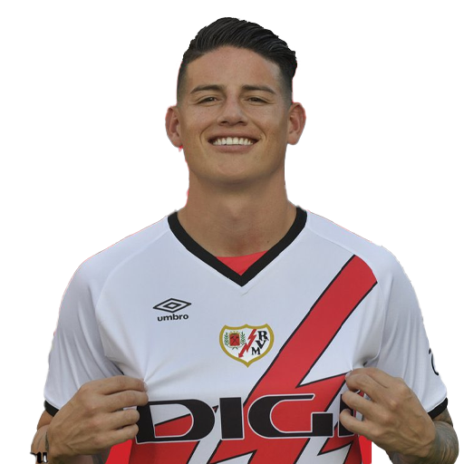

Difensori
2 Andrei Rațiu (TD)
3 Pep Chavarría (TS)
5 Aridane Hernández (DC)
16 Abdul Mumin (DC)
20 Iván Balliu (TD)
22 Alfonso Espino (TS)
24 Florian Lejeune (DC)
27 Pelayo Fernández (DC)
Centrocampisti
4 Pedro Díaz (CC)
6 Pathé Ciss (CC)
8 Óscar Trejo (TQ)
10 James Rodríguez (TQ)
11 Randy Nteka (TQ)
15 Gerard Gumbau (CC)
17 Unai López (CC)
23 Óscar Valentín (CC)
25 Joni Montiel (TQ)
Attaccanti
7 Isi Palazón (AD)
9 Raúl de Tomás (AT)
12 Sergi Guardiola (AT)
14 Sergio Camello (AT)
18 Álvaro García (AS)
19 Jorge de Frutos (AD)
21 Adrián Embarba (AD)